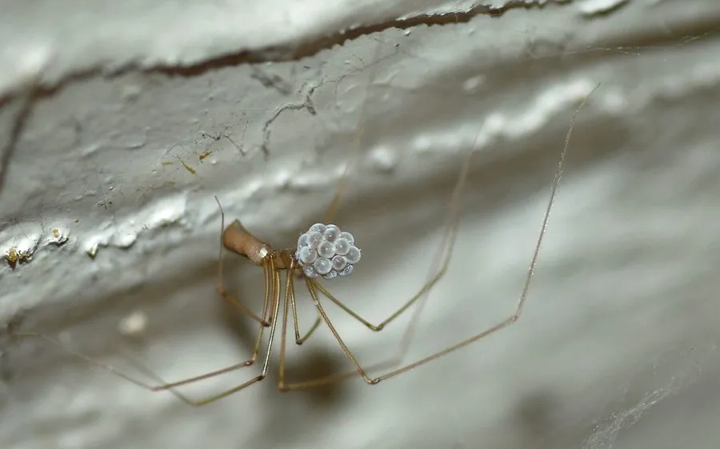

蛛形动物 · 动物界
长踦幽灵蛛 Pholcus phalangioides

室内常见的细腿蜘蛛，腿长可达身体数倍，倒挂在墙角不规则的网上，能捕食蚊子、苍蝇甚至其他蜘蛛。
- 分类
- 门节肢动物门纲蛛形纲目蜘蛛目科幽灵蛛科属幽灵蛛属
- 栖息环境
- 室内墙角、天花板、地下室、门后等阴暗避风处
- 地理分布
- 全球室内环境，中国各地房屋中常见
- 保护级别
- IUCN 暂无评估；中国未列入国家重点保护名录
物种志
长踦幽灵蛛雌蛛体长 7–9 毫米，腿展可达 4–5 厘米，八足极细长，是身体的好几倍，因此得名“长踦”。它身体呈灰褐或淡黄色，头胸部小，腹部细长呈圆柱形，常倒挂在蛛网上，姿势像悬挂的幽灵。
它几乎遍布全球的室内环境，栖息于墙角、天花板、地下室和门后，结不规则的乱网，捕食蚊子、苍蝇、蛾类和小型蜘蛛，甚至会猎食比自己大的蜘蛛。受惊时它会快速抖动身体和蛛网，使画面变得模糊以躲避捕食者，也会把猎物用蛛丝包裹后悬挂储存。雌蛛产卵后会背着卵囊或把卵囊衔在螯肢间，幼蛛孵化后独立生活。长踦幽灵蛛毒性很弱，对人几乎无害，是室内常见的益虫。
形态与习性
- 食性蚊子、苍蝇、蛾类和小型蜘蛛
- 体长雌蛛 7–9 mm，腿展可达 4–5 cm
- 寿命约 1–2 年
- 繁殖卵生，雌蛛携带卵囊，幼蛛孵化后独立
- 活动节律昼夜均活动，常倒挂在网上
- 防御受惊时快速抖动身体和蛛网，使自身模糊难辨
趣味知识
- 长踦幽灵蛛的腿长是身体的数倍，倒挂在网上像悬挂的幽灵。
- 它受惊时会快速抖动蛛网，让捕食者看不清自己的位置。
- 它能在室内捕食蚊子、苍蝇甚至其他蜘蛛，是常见的益虫。